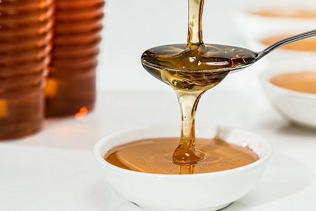

Honey is a natural sweetener produced by bees from the nectar of flowers. It is often used as a topping, sweetener, or
ingredient in variousdishes. Here's some information about honey in terms of carbohydrates and how to enjoy it:
1. Carbohydrate content: Honey is primarily composed of carbohydrates, particularly fructose and glucose. The exact carbohydrate content
of honey can vary depending on the type and source, but on average, it contains about 82 grams of carbohydrates per 100 grams.
2. Nutritional profile: In addition to carbohydrates, honey also contains trace amounts of vitamins, minerals, and antioxidants. However,
the overall nutritional value of honey is relatively low compared to other foods, as it is mostly a concentrated source of carbohydrates
and calories.
3. Types of honey: There are different varieties of honey available, and their flavors, colors, and nutritional profiles may vary based
on the flowers from which the bees collected the nectar. Common types include clover honey, wildflower honey, acacia honey, and manuka
honey.
4. Culinary uses: Honey has a sweet and distinct flavor, making it a versatile ingredient and topping. Here are some ways to enjoy honey:
- Sweetener: Honey can be used as a natural sweetener in various foods and beverages. It can be stirred into hot or cold drinks, added
to smoothies, drizzled over yogurt or cereal, or used as a substitute for sugar in baking recipes.
- Spread: Honey can be spread on toast, pancakes, waffles, or biscuits as a delicious alternative to jams or spreads.
- Salad dressing: Honey can be incorporated into homemade salad dressings to add a touch of sweetness. It pairs well with ingredients
like olive oil, vinegar, mustard, and herbs.
- Marinade or glaze: Honey can be used in marinades or glazes for meats, poultry, or roasted vegetables. It adds a caramelized and
flavorful coating when grilled or roasted.
- Desserts and baking: Honey can be used in a wide range of desserts, including cakes, cookies, muffins, and pies. It provides natural
sweetness and can enhance the texture and moisture of baked goods.
- Pairings: Honey can be combined with other ingredients to create delicious flavor combinations. For example, you can drizzle honey
over cheese, pair it with fruits, or mix it with nut butters for a tasty treat.
It's important to note that while honey does provide some nutritional benefits, it is still a concentrated source of carbohydrates and
calories. It should be consumed in moderation as part of a balanced diet. Additionally, honey should not be given to infants under one
year of age due to the risk of botulism.